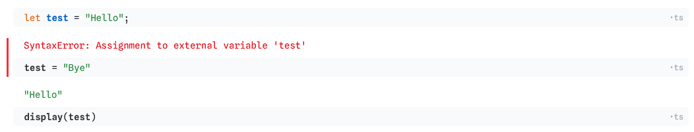
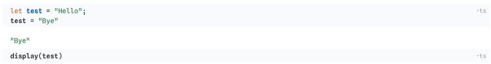

Week 4 Lab: JavaScript Essentials Prior to D3.js
CS-GY 6313 - Information Visualization
New York University
2026-09-25
Week 4 Lab Overview
| User Interface | Graphics Library | Notebook |
|---|---|---|
| observablehq.com | (None!) | Lab 3 Notebook |
Today’s Lab Activities
- Introduction to D3.js… kinda
- Introduction to JavaScript Essentials
- Data Manipulation (mapping, filtering)
Why JavaScript First?
A lot of D3.js requires basic JavaScript. Before we even start with D3.js, we have to have a solid grasp on JavaScript fundamentals.
JavaScript is:
- (relatively) lightweight as a standalone language (though the JavaScript ecosystem is getting heavier with each new library released).
- a “Just-In-Time” compiler (Read more here).
- used both in and outside of the web browser (e.g. Node.js, React).
- loosely-typed (or weakly-typed, dynamically-typed, etc.)
let v.s. var v.s. const
JavaScript Allows Type-inference
JavaScript uses type inference to determine what data type a variable is. Therefore, you don’t have to directly state if a variable is a string, int, etc.
JavaScript Requires Scope Declarations
However, JavaScript still requires you to define the scope of your variables within their block.
letandconstare block-scoped; they are restricted to the closest curly brackets they are surrounded by.letdeclares that a variable can be reassigned a value within its scope.constdeclares that a variable cannot be reassigned a value.
varis function-scoped and global-scoped; they can leak out ofifstatements or other kinds of loops.vardeclares that a variable can be reassigned a value.- Try to avoid
varas much as possible.
Reassignment v.s. Redeclaration
There’s a difference between reassignment and redeclaration:
- Reassignment: Setting a new value to an existing variable
- Redeclaration: Usually accidentally, even if the variable already exists, you create another variable with the same name.
| Scope | Reassignment | Redeclaration |
|---|---|---|
var |
Can be updated | Can be redeclared |
let |
Can be updated | Cannot be redeclared |
const |
Cannot be updated | Cannot be redeclared |
[Note]: If you set a
constvariable as an object, though you cannot reassign a new value to it, you can still modify the object’s properties and values.
Source: W3Schools
JavaScript vs TypeScript
TypeScript is a SuperSet of JavaScript. It contains all the properties and characteristics of pure JavaScript, while also extending it further. You code in TypeScript, and then when you deploy your code your IDE will convert your TypeScript back into normal JavaScript.
| Feature | JavaScript | TypeScript |
|---|---|---|
| Typing | loose/dynamically typed | static typed |
| Tools | Limited built-in tooling | Comes with IDEs, code editors |
| Compatibility | Cannot run TypeScript in JavaScript files | Backwards-compatible with JavaScript |
| Extension | .js |
.ts |
Things… Don’t Really Change
Most JavaScript you write will STILL be valid even in TypeScript. Why even care about TypeScript then?
let age: number = 25;
let name: string = "Alice";
let active: boolean = true;
const scores: number[] = [85, 90, 72];
function add(a: number, b: number): number {
return a + b;
}
const student: {
name: string;
score: number;
} = {
name: "Alice",
score: 95
};TypeScript allows you (but doesn’t require you) to explicitly declare a variable’s type. This cannot be done in JavaScript, as JS is a dynamically typed language.
let age = 25;
age = "Twenty-Five";- JavaScript: Allowed
- TypeScript: Error!
TypeScript’s stricter type inference can be leveraged to catch erroneous (re)assignments that pure JavaScript would be happy to compile.
// Example: Interface
interface Student {
name: string,
grade: number
}
const students : Student[] = [
{ name: "Alice", grade: 96 },
{ name: "Jim", grade: 97 }
]// Example: Alias
type PriceTier = "Low" | "Medium" | "High";
let tier : PriceTier = "Medium";
let tier2 : PriceTier = "Expensive"; // <- ERRORTypeScript introduces interface and aliases that are reusable. If you are aware of the specific qualities of your variables, then you can use this to ensure that your functions compile properly.
Be careful about typing!
Even if you explicitly declare your variables’ types, those checks will disappear after your TypeScript is compiled. These explicit typings are only for YOUR benefit, to make more robust code. When your code is actually deployed, your type checks will no longer work.
Note: Observable Notebooks and Variable Scope
Scope works slightly differently in Observable’s online notebooks. Here are some simple rules:
- You can control whether a cell should be in TypeScript, JavaScript, Observable JavaScript, or even Markdown and/or HTML
- Scope rules regarding reassignment and redeclaration are at the code block-level.
- Variables in one code block can still be accessed by other code blocks, regardless of whether
let,const, orvarare used.
Erroneous Code

Valid Code

JavaScript Objects and Data Storage
Below is an example of a dataset stored as both a JavaScript Object (specifically, an array of items) and as a .csv table
- The dataset is simply an
Arraystoring multiple objects in order. - Each item in the dataset is an
Object. - Each
Objectis a collection of keys/properties and values.
In-Lab Exercise: What Does This JavaScript Do?
If we are given this dataset:
const students = [
{name: "Alice", major: "CS", score: 82},
{name: "Bob", major: "Biology", score: 91},
{name: "Carol", major: "CS", score: 76},
{name: "David", major: "Physics", score: 88}
];Then what will these return?
| Code | Output/Returns |
|---|---|
students[0]
|
{name: “Alice”, major: “CS”, score: 82}
|
students[0].name
|
“Alice”
|
students[2].score
|
76
|
If we are given this dataset:
const students = [
{name: "Alice", major: "CS", score: 82},
{name: "Bob", major: "Biology", score: 91},
{name: "Carol", major: "CS", score: 76},
{name: "David", major: "Physics", score: 88}
];Then what will these return?
| Code | Output/Returns |
|---|---|
students.map(d => d.name)
|
[“Alice”,“Bob”,“Carol”,“David”]
|
students.map(d => d.score)
|
[82,91,76,88]
|
students.filter(d => d.score >= 85)
|
|
JavaScript Functions
Two types:
In most cases, they are the same. Many consider arrow functions to be a shorthand version of writing functions. if your arrow function reduces down to a single return, then you can even go shorter:
map() v.s. filter() v.s. reduce()
JavaScript provides some in-built functions.
map(): Keep the same length, but re-“map” values into something else.filter(): Keep values the same, but “filter” out items that don’t match a provided criteriareduce(): Combination ofmap()andfilter(), literally “reduces” an array into something else.
We won’t use reduce() a lot, but you may need map() and filter() in order to manipulate data in JavaScript.
In-Lab Exercise: Practicing with Data Handling
The Gapminder dataset is the focus of this exercise. With it, and using JavaScript’s in-built map(), filter(), and/or reduce(), produce the following:
- An array with only life expectancy values
- All records including and after 1990
- All records from France only
- (Bonus) An array of all unique countries present within the Gapminder data
- (Bonus) The average population size of each country
An array with only life expectancy values
All records including and after 1990
All records from France only
(Bonus) An array of all unique countries present within the Gapminder data
(Bonus) The average population size of each country
End of Lab
- Exercise #4 will be posted tonight and is due on October 1st, 2026 @ 11:59pm!
- Where do I ask questions?
- Office Hours!
- Our course Discord!